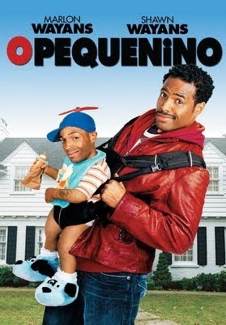

o pequenino

ano:2006
clasificação:12
1h:37
sinopse
O anão Calvin mal saiu da prisão e já planeja um novo assalto a uma joalheria. Perseguido pela polícia, ele esconde o diamante na bolsa de Vanessa, cujo marido, Darryl, sonha em ter um filho. Aproveitando a oportunidade para recuperar a pedra, Calvin se veste como criança e é deixado em frente à casa de Darryl para que seja acolhido. O casal passa um final de semana com o pequeno e decide adotá-lo, acreditando ser um bebê abandonado.
voltar